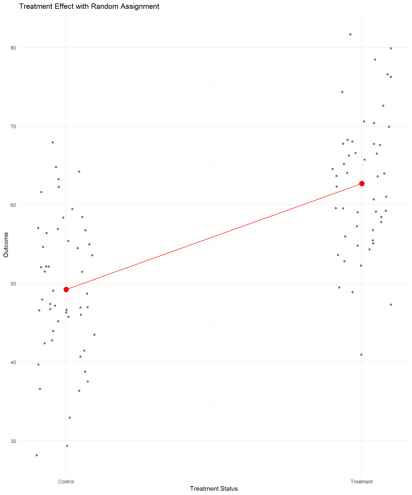

Randomized Assignment
Econometrics with R
Dr. Lucas Sempé
Randomized Assignment: The Gold Standard
- Core idea: Randomly select who receives the treatment
- Result: Treatment and control groups are statistically identical (in expectation)
- Advantage: Differences in outcomes can be attributed to the program
- Why it works: Randomization creates a valid counterfactual
- Types: Encouragement, lottery, phase-in, etc.
Why Does Randomization Work? How Does it Create a Valid Counterfactual?
Let’s think through an example.
If we randomly choose two people from this room, they will likely have very different characteristics (observable ones such as age, sex, education, and unobservable ones such as innate abilities, motivation, ideas, etc.). They may not have anything in common at all. They would not make good counterfactuals for each other.
However, something different happens when we randomly choose large groups of people. If we were to randomly choose two groups of 1,000 people from across the country, with every person having an equal chance of being chosen, these groups will, on average, have statistically equivalent characteristics. If you remember from statistics class, a random sample represents the population from which it is drawn. Therefore, two large random samples will have statistically equivalent characteristics that represent the population from which they were drawn. We would expect these groups to have:
- Approximately the same average age, sex composition, average level of educational attainment, same average income
- And they will be approximately equal in characteristics we can’t directly observe or measure: approximately the same ability, the same motivation, etc.
Any slight differences will be statistically insignificant
In short: - If groups are big enough and random assignment is used, the groups will be equivalent on average, even on characteristics we cannot observe.
Implementing Randomized Assignment
- Define population of eligible units
- Decide on level of randomization (individuals, households, villages)
- Determine sample size (power calculations)
- Randomly select units to receive treatment
- Verify balance between treatment and control groups
- Implement program and collect data
Fictional Case Study: Randomized Industries
- Program was implemented as a pilot in 100 industries randomly selected from all industries
- 100 additional randomly selected industries serve as controls
- This design ensures that treatment and control industries are statistically identical
- Only industries below certain degree of efficiency in treatment industries were eligible
Verifying Balance at Baseline
- Results show most characteristics are balanced
- Small differences in education of industry manager and distance to recycling centre
- With many characteristics, some differences by chance are expected
| Variable | Diff Treat/Control | Std. Error | P-value |
|---|---|---|---|
| Advanced Filtration | -0.01 | 0.01 | 0.28 |
| Deputy Age | -0.04 | 0.31 | 0.90 |
| Manager Age | -0.64 | 0.38 | 0.09 |
| Deputy Education | 0.03 | 0.07 | 0.67 |
| Manager Education | 0.16 | 0.07 | 0.02 |
| Business Area | -0.04 | 0.07 | 0.57 |
| Female Manager | 0.00 | 0.01 | 0.56 |
| Foreign Owned | 0.01 | 0.01 | 0.49 |
| Distance from Nearest Recycling Center | 2.91 | 1.13 | 0.01 |
| Staff Size | 0.06 | 0.05 | 0.26 |
| Water Treatment System | 0.01 | 0.01 | 0.26 |
# Check if treatment and control industries are balanced at baseline
# Step 1: Filter to only keep baseline (pre-intervention) observations
# Step 2: Select relevant baseline variables to test for balance
# Step 3: Reshape data to long format using pivot_longer() so that we have one row per variable per industry, keeping treatment assignment
# Step 4: Group by each baseline variable
# Step 5: For each variable, run a simple regression of the baseline variable on treat assignment
# Step 6: Only keep the coefficient for 'treatment_zone' since we are interested in differences between treatment and control
# Step 7: Select key results to display (variable name, estimated difference, standard error, and p-value)
df %>%
filter(round == 0) %>%
select(treatment_zone, age_manager, age_deputy,
educ_manager, educ_deputy,
female_manager, foreign_owned, staff_size,
advanced_filtration, water_treatment_system,
facility_area, recycling_center_distance) %>%
pivot_longer(-c("treatment_zone")) %>%
group_by(name) %>%
do(tidy(lm_robust(value ~ treatment_zone, data = .))) %>%
filter(term == "treatment_zone") %>%
select(name, estimate, std.error, p.value)Estimating Program Impact: Simple Comparison of Means
# Compare waste expenditures in treatment and control industries at follow-up
# Regression at baseline: are waste expenditures different between treatment and control groups before intervention?
out_round0 <- lm_robust(waste_management_costs ~ treatment_zone,
data = df %>% filter(round == 0 & eligible ==1),
clusters = zone_identifier)
# Regression at follow-up: are waste expenditures different between treatment and control groups after intervention?
out_round1 <- lm_robust(waste_management_costs ~ treatment_zone,
data = df %>% filter(round == 1 & eligible ==1),
clusters = zone_identifier)| Round 0 | Round 1 | |
|---|---|---|
| (Intercept) | 1457.385*** | 1798.055*** |
| (15.726) | (30.912) | |
| treatment_zone | −8.415 | −1014.037*** |
| (21.456) | (39.890) | |
| Num.Obs. | 5628 | 5629 |
| R2 | 0.000 | 0.300 |
| R2 Adj. | −0.000 | 0.300 |
| + p < 0.1, * p < 0.05, ** p < 0.01, *** p < 0.001 |
Using Regression Analysis
# Compare waste expenditures in T and C industries at follow-up with additional covariates
out_round2 <- lm_robust(waste_management_costs ~ treatment_zone +
age_manager + age_deputy +
female_manager + foreign_owned +
staff_size +
advanced_filtration + facility_area +
recycling_center_distance,
data = df %>% filter(round == 1 & eligible ==1),
clusters = zone_identifier)| No covariate adj. | With covariate adj. | |
|---|---|---|
| (Intercept) | 1798.055*** | 2722.356*** |
| (30.912) | (70.976) | |
| treatment_zone | −1014.037*** | −1001.150*** |
| (39.890) | (34.588) | |
| age_manager | 4.470** | |
| (1.491) | ||
| age_deputy | 0.568 | |
| (1.656) | ||
| female_manager | 65.686 | |
| (45.064) | ||
| foreign_owned | −186.650*** | |
| (35.774) | ||
| staff_size | −159.393*** | |
| (6.565) | ||
| advanced_filtration | −184.731*** | |
| (27.952) | ||
| facility_area | 4.007 | |
| (3.836) | ||
| recycling_center_distance | −0.252 | |
| (0.426) | ||
| Num.Obs. | 5629 | 5629 |
| R2 | 0.300 | 0.429 |
| R2 Adj. | 0.300 | 0.428 |
| + p < 0.1, * p < 0.05, ** p < 0.01, *** p < 0.001 |
- Treatment effect remains stable with addition of control variables
- Controls improve precision (smaller standard errors)
- Adding controls increases R² from 0.30 to 0.43
Why Covariates Don’t Change the Estimate Much
In randomized experiments:
- Treatment assignment is independent of observed and unobserved characteristics
- Control variables are uncorrelated with treatment status (in expectation)
- Including controls may:
- Increase precision (reduce standard errors)
- Account for any chance imbalances
- But should not substantially change the point estimate
Visualizing the Results
# Step 1: Group the data by enrollment status (treatment vs. control) and round (before vs. after)
# Step 2: Relabel variables to make the plot labels easier to understand ("0" becomes "Control" or "Before", "1" becomes "Treatment" or "After")
# Step 3: Summarize the data by calculating the average waste management cost for each group and time period
# Step 4: Plot the average costs over time, drawing separate lines for treatment and control groups
#Step 5: Customize the plot with titles, axis labels, colors, and a clean minimal theme
df %>% group_by(enrolled, round) %>%
mutate(enrolled = recode(as.factor(enrolled), `0` = "Control", `1` = "Treatment"),
round = recode(as.factor(round), `0` = "Before", `1` = "After")) %>%
summarise(waste_management_costs = mean(waste_management_costs)) %>%
ggplot(aes(x = round, y = waste_management_costs, group = enrolled, color = enrolled)) +
geom_line(size = 1.2) + geom_point(size = 3) +
labs(title = "Program Impact on Waste Expenditures", x = "Round",
y = "Waste Expenditures (USD)") +
theme_minimal() + theme(legend.position = "bottom")
- Closer baseline values confirm balance between groups
- Clear divergence after the program
- Treatment group shows significant reduction in expenditures
- Control group shows slight increase over time
Strength of the Results
- Internal validity: Strong - randomization ensures that the impact is attributable to the program
- External validity: Limited to similar contexts
- Precision: High - narrow confidence intervals
- Policy relevance: Impact exceeds the 1,000 AED threshold
From Analysis to Policy Decision
Policy question: Should the Programe be scaled up nationally?
Decision criterion: Program must reduce waste expenditures by at least 1,000 AED.
Results from randomized evaluation:
- Impact: -1,014 (95% CI: [-1,093, -935])
- Exceeds threshold of 1,000 AED reduction
Recommendation: The program should be scaled up nationally.
Limitations of Randomized Assignment
- Ethical concerns
- Denying benefits to control group
- Informed consent issues
- Practical challenges
- Political constraints
- Implementation costs
- Scale vs. pilot differences
- Technical issues
- Spillover effects
- Hawthorne effects
- Attrition and non-compliance
- External validity
- Timing
- Long-term outcomes
- Delay in results for urgent policies
Types of Randomization
Different types of randomization can help address some of the ethical and practical challenges.
- Lottery
- Use random number generator to select eligible units to receive treatment.
- Useful when there are insufficient resources to meet demand and is logistically simple.
- Some eligible units do not receive treatment (control).
- Multiple Treatments
- Randomly assign units to different treatment arms.
- Useful when we are interested in the comparative effectiveness of different intervention approaches or methods of service delivery.
- Complex to implement and requires even larger sample.
- Phase-in
- Randomly assign units to receive treatment at different times.
- Useful when we want all eligible units to receive treatment eventually, and can help us understand impact of program over time.
- Susceptible to anticipation bias.
- Encouragement
- Treatment is randomly encouraged rather than assigned.
- Useful when we want all units to have the option to receive treatment, and can help us understand if encouragement mechanisms improve outcomes.
- Requires larger sample and assesses impact only for those that respond to encouragement.
- Instrumental variables, covered in the next session, is an example of this
When Randomization Isn’t Possible
When randomization is not feasible, we can use quasi-experimental methods:
- Instrumental Variables: Using random encouragement
- Regression Discontinuity: Exploiting eligibility thresholds
- Difference-in-Differences: Comparing changes over time
- Matching Methods: Creating comparable groups
Key Takeaways
- Randomization creates comparable treatment and control groups
- With randomization, differences in outcomes can be attributed to the program
- Including covariates doesn’t substantially change estimates but can improve precision
- The program reduces waste expenditures by 1,014 AED, exceeding the threshold
- Based on the randomized evaluation, HISP should be scaled up nationally
Next Session
Instrumental Variables: Leveraging randomized promotion to evaluate programs with imperfect compliance